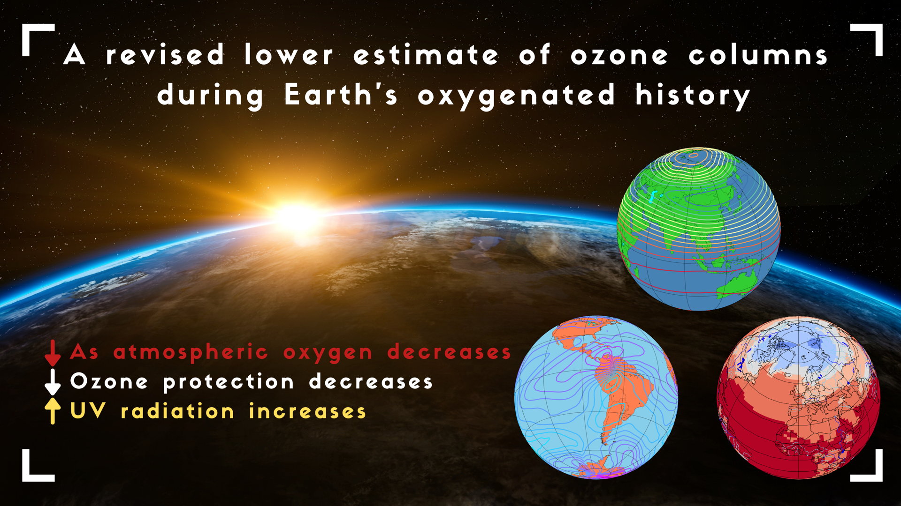

Research
Read on to find out more about my research and code developments.
Atmospheres of Hycean worlds

We simulated the atmosphere of K2-18 b, assuming it is either a hycean world (habitable planet with a hydrogen-dominated atmosphere), or a mini-Neptune with no surface, following Wogan et al. (2024). We showed that the current composition of K2-18 b, with roughly 1% CH4 and 1% CO2, with a non-detection of CO, H2O, and NH3, is consistent with a hycean world that has an ocean surface. The planet could be an inhabited hycean or an uninhabited hycean, but the current models of mini-Neptunes are inconsistent with the observed composition. However, we caution that we are in the early stages of understanding the atmospheres of sub-Neptunes, for which we have no Solar System analogue. The chemical networks need updating, and the incoming radiation from the host star (K2-18) in the UV is also uncertain. Additionally, both the climate and chemical processes depend on the albedo of the planet, which is unknown. Models do indicate that an albedo of > 0.4 is required to cold trap the H2O regardless of whether the planet is a hycean world or not.
Early Earth: Proterozoic to present day
We used WACCM6 to simulate the Earth's oxygen concentrations between 2.4 billion years ago and the present day. Oxygen has fluctuated in this time between levels of 0.1% the present atmospheric level (PAL) all the way up to 150% PAL. We were able to predict the spatial and seasonal variation of Earth's ozone layer and how it varies with oxygen concentration. Future work in this area will focus on improving various physical parameterizations to more accurately simulate the low oxygen scenarios. Additionally, accounting for the changing continents will be of interest. The paper we published on this can be accessed at https://doi.org/10.1098/rsos.211165
Observational predictions
I use the 3D climate simulations to predict what these exoplanet atmospheres may look like through current and next-generation telescopes. To do this, I developed a pipeline in Python to take WACCM6 simulation data and process it so it can be uploaded to the GlobES application from the NASA Planetary Spectrum Generator (PSG). These observational predictions take the form of transmission spectra or direct imaging spectra.
In transmission spectra, the exoplanet passes in front of the star and blocks light - this is known as a transit. The amount of light it blocks depends on the radius of the planet, the radius of the star, as well as the exoplanet's atmospheric pressure and atmospheric composition. During a transit, light will pass through the atmosphere, and different wavelengths of light will be absorbed with various efficiencies, depending on the temperature, pressure, and chemical composition of the atmosphere. This blocks out further light compared to the solid disk of the planet. It may not be possible to probe the lowest part of the atmosphere due to the refraction of light away from the observer. For Earth, this altitude is roughly 13 km above the surface. Clouds also affect the ability to probe the lower atmosphere.
In direct imaging, the exoplanet is directly imaged, and its spectra will be due to reflection, emission, or a combination, depending on which wavelengths are being observed, and the temperature of the exoplanet. The depth of absorption features in reflection spectra depend on the amount of absorber in the atmosphere, and can be influence by clouds at different altitudes, with some boosting reflectivity and others decreasing reflectivity. The depth of absorption features in emission spectra depend on the relative temperature between the surface and the absorption layer. Cooke et al. (2023), which is based on direct imaging (reflection spectra) predictions for the LUVOIR and HabEx telescope concepts, is published in MNRAS.
Tidally locked exoplanets
I am have used WACCM6 to investigate the atmospheric chemistry and spectroscopic observability of TRAPPIST-1 e and Proxima Centauri b. These exoplanets orbit M dwarf hosts, and are both considered to be in the habitable zone (the region around the star where liquid water can exist on a planet's surface). These two exoplanets are likely tidally locked. If so, then this means they synchronously rotate around their host star, such that their orbital period is the same length as their rotational period. However strange it sounds, some exoplanets out there have a dayside and a nightside that never changes location. So, one side will be permanently hotter and one side permanently colder than the other.
For TRAPPIST-1 e, I started the simulations in 2020, when three semi-empirical spectra of TRAPPIST-1 had been produced by Peacock et al (2019; hereafter referred to as P19). In 2021, Wilson et al. (2021), as part of the Mega-MUSCLES collaboration, released a semi-empirical spectrum of TRAPPIST-1. So, I decided to use both spectra and include them in the simulations. The differences between the two scenarios were very interesting, and the results can be found in Cooke et al (2023).
Code developments
I have made several modifications to the WACCM6 source code, which can be found on GitHub. The modifications detail how I modified the WACCM6 code to simulate lower oxygen concentrations, but also tidally locked exoplanets.
I have written a code in Python in Jupter Notebook known as (SWIM). This code downloads stellar spectra and rebins them to a specifc climate model wavelength grid. It then scales the spectra to that of a specific planet. This code can be adapted to be used with different models. If you would like to include your model, please get in touch and I would be happy to add it into the code.
With future modifications and improvements, this will be a very useful open-source tool for use in the fields of exoplanet climate modelling, exoplanet atmospheric escape modelling, and protoplanetary disk modelling, amongst others.